5
Dokument obsahuje komponenty, které jsou použity v rámci celé aplikace.
Přehled
| Název | Anglický ekvivalent | Náhled |
|---|---|---|
| Label | Label | |
| Textové pole | TextBox | 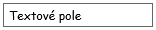 |
| Víceřádkové textové pole | MultilineTextBox | 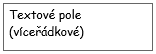 |
| NumericUpDown | 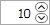 | |
| Tlačítko | Button | 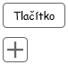 |
| ToggleButton | 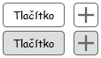 | |
| Přepínací tlačítko | SwitchButton | |
| Zaškrtávací políčko | CheckBox | 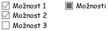 |
| Přepínač | RadioButton | 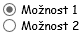 |
| Záložka | TabPage | 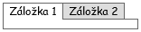 |
| Rozbalovací nabídka | ComboBox | 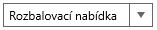 |
| Našeptávač | AutoSuggestTextBox | 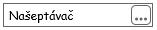 |
| Našeptávač s možností vytvořit objekt | AutoSuggestTextBox (with add button) | 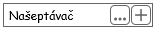 |
| Ovládací prvek pro datum | DatePicker | 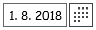 |
| Ovládací prvek pro čas | TimePicker | 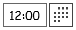 |
| Textový filtr | SearchBox | |
| Tabulka | Grid | 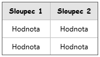 |
| Graf | Chart | 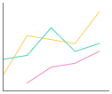 |
| Mapa | Map | 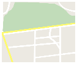 |
| Obrázek | Image |
Komponenty
Rozbalovací nabídka
TODO: Popis.
TODO: Přidat znázornění hodnoty Nevybráno.
Drátový diagram
Grafický návrh
Konkrétní implementace
Výběr kódu banky
- Všechna použití
Formát položky v rámci kontextové nabídky pak bude následující (viz tabulka):
| Sloupec | Nadpis | Příklad hodnoty | Hodnota | Formát | Řazení |
|---|---|---|---|---|---|
| Název banky | – | Air Bank | Entita Bankovní spojení. | 1. Vzestupně, abecedně. | |
| Kód banky | – | 3030 | Entita Bankovní spojení . | 2. Vzestupně, abecedně. |
Výběr Likvidačního místa
Použití
Formát položky v rámci kontextové nabídky pak bude následující (viz tabulka):
| Sloupec | Nadpis | Příklad hodnoty | Hodnota | Formát | Řazení |
|---|---|---|---|---|---|
| Název likvidačního místa | – | Kompostáreň Trenčín | Entita Likvidační místo. | 1. Vzestupně, abecedně. | |
| Adresa likvidačního místa | – | Opatovská 1735, 911 01 Trenčín | Entita Adresa – atribut Adresa entity Likvidační místo. | Pokud není dostupné Číslo orientační:
Pokud není dostupné Číslo popisné:
| 2. Vzestupně, abecedně. |
| Kód nakládání | – | R13 | Entita Likvidační místo. | 3. Vzestupně, abecedně. |
Našeptávač
TODO: Popis.
Drátový diagram

Grafický návrh
Konkrétní implementace
Výběr likvidačního místa
Použití
Struktura
Formát položky v rámci kontextové nabídky pak bude následující (viz tabulka):
| Sloupec | Nadpis | Příklad hodnoty | Hodnota | Formát | Řazení |
|---|---|---|---|---|---|
| Název likvidačního místa | – | Kompostáreň Trenčín | Entita Likvidační místo. | 2. Vzestupně, abecedně. | |
| Adresa likvidačního místa | – | Opatovská 1735, 911 01 Trenčín | Entita Adresa – atribut Adresa entity Likvidační místo. | Pokud není dostupné Číslo orientační:
Pokud není dostupné Číslo popisné:
| 3. Vzestupně, abecedně. |
| Kód nakládání | – | R13 | Entita Likvidační místo. | 4. Vzestupně, abecedně. |
Výběrový dialog
Po stisknutí tlačítka pro zobrazení všech položek je zobrazeno dialogové okno – popis viz .
Výběr podnikatelského subjektu
Použití
Struktura
Formát položky v rámci kontextové nabídky pak bude následující (viz tabulka):
Poznámka:
- Řazení záznamů je dáno pořadím, ve kterém jsou jednotlivé záznamy vráceny z API.
- Specifikace ve sloupci Formát odpovídá XML elementům uvedeným v rámci popisu komunikace s API, viz Získání subjektů dle zadaného řetězce.
| Sloupec | Nadpis | Příklad hodnoty | Hodnota | Formát | Řazení |
|---|---|---|---|---|---|
| Název podnikatelského subjektu | – | Marius Pedersen, a.s. | Záznam vrácen z API. | – | |
| Město sídla podnikatelského subjektu | – | Trenčín | Záznam vrácen z API. | – | |
| IČO podnikatelského subjektu | – | 34115901 | Záznam vrácen z API. | – |
Výběrový dialog
Není k dispozici.
Našeptávač s možností vytvořit objekt
TODO: Popis.
Drátový diagram
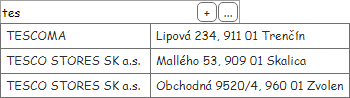
Grafický návrh
Konkrétní implementace
Zákazník
Použití
Struktura
Formát položky v rámci kontextové nabídky pak bude následující (viz tabulka):
| Sloupec | Nadpis | Příklad hodnoty | Hodnota | Formát | Řazení | Vyhledávání ve sloupci |
|---|---|---|---|---|---|---|
| Název | – | Marius Pedersen, a.s. | Entita Zákazník. | 1. Vzestupně, abecedně. | Ano: fulltext. | |
| IČO | IČO | 34115901 | Entita Zákazník. | 2. Vzestupně, abecedně. | Ano: od začátku řetězce. | |
| Adresa | – | Opatovská 1735, 911 01 Trenčín | Entita Adresa – atribut Adresa sídla entity Zákazník. | Pokud není dostupné Číslo orientační:
Pokud není dostupné Číslo popisné:
| 3. Vzestupně, abecedně. | Ano: fulltext. |
Výběrový dialog
Po stisknutí tlačítka pro zobrazení všech položek je zobrazeno dialogové okno – popis viz .
Rámcová smlouva
Použití
Struktura
Formát položky v rámci kontextové nabídky pak bude následující (viz tabulka): <Číslo smlouvy>. Poznámka: Jedná se o stávající chování.
| Sloupec | Nadpis | Příklad hodnoty | Hodnota | Formát | Řazení | Vyhledávání ve sloupci |
|---|---|---|---|---|---|---|
| Číslo smlouvy | – | 11084274 | Entita Rámcová smlouva. | <Číslo smlouvy> | 1. Vzestupně, abecedně. | Ano: fulltext. |
| Platnost od | – | 10. 1. 2018 | Entita Rámcová smlouva. | 2. Sestupně, datum. | Ne. | |
| Platnost do | – | 10. 1. 2019 | Entita Rámcová smlouva. | 3. Sestupně, datum. | Ne. |
Poznámka: Jedná se o dočasné řešení, které bude pravděpodobně upraveno dle struktury entity Rámcová smlouva v systému WinyX.
Výběrový dialog
Po stisknutí tlačítka pro zobrazení všech položek je zobrazeno dialogové okno – popis viz .
Místo realizace
Použití
Struktura
Formát položky v rámci kontextové nabídky pak bude následující (viz tabulka):
| Sloupec | Nadpis | Příklad hodnoty | Hodnota | Formát | Řazení | Vyhledávání ve sloupci |
|---|---|---|---|---|---|---|
| Název | – | ACME s.r.o., Trenčín | Entita Místo realizace. | 1. Vzestupně, abecedně. | Ano: fulltext. | |
| Adresa | – | Lipová 234, 911 01 Trenčín | Entita Adresa – atribut Adresa entity Místo realizace. | Pokud není dostupné Číslo orientační:
Pokud není dostupné Číslo popisné:
| 2. Vzestupně, abecedně. | Ano: fulltext. |
Výběrový dialog
Po stisknutí tlačítka pro zobrazení všech položek je zobrazeno dialogové okno – popis viz .
Právní forma
Použití
Struktura
Formát položky v rámci kontextové nabídky pak bude následující (viz tabulka):
| Sloupec | Nadpis | Příklad hodnoty | Hodnota | Formát | Řazení | Vyhledávání ve sloupci |
|---|---|---|---|---|---|---|
| Název | – | Akciová společnost | Entita Právní forma . | 1. Vzestupně, abecedně. | Ano: fulltext. |
Výběrový dialog
Po stisknutí tlačítka pro zobrazení všech položek je zobrazeno dialogové okno – popis viz .
Osoba zákazníka
Musí být rozlišeno mezi Statutárním zástupcem a Kontaktní osobou – odlišnosti jsou uvedeny v rámci tabulek s popisem. Hodnoty jsou pak dle použití filtrovány následovně:
- Statutární zástupce – takové Osoby zákazníka, které mají atribut Statutární zástupce nastaven na TRUE.
- Kontaktní osoba – takové Osoby zákazníka, které mají atribut Kontaktní osoba nastaven na TRUE.
Použití
Struktura
Formát položky v rámci kontextové nabídky pak bude následující (viz tabulka):
| Sloupec | Nadpis | Příklad hodnoty | Hodnota | Formát | Řazení | Vyhledávání ve sloupci |
|---|---|---|---|---|---|---|
| Jméno | – | Peter | Entita Osoba zákazníka. | 2. Vzestupně, abecedně. | Ano: fulltext. | |
| Příjmení | – | Drobný | Entita Osoba zákazníka. | 1. Vzestupně, abecedně. | Ano: fulltext. |
Výběrový dialog
Po stisknutí tlačítka pro zobrazení všech položek je zobrazeno dialogové okno – popis viz .
Likvidační místo
Použití
Poznámka: Dostupné z formuláře pro přidání nádoby.
Struktura
Formát položky v rámci kontextové nabídky pak bude následující (viz tabulka):
| Sloupec | Nadpis | Příklad hodnoty | Hodnota | Formát | Řazení | Vyhledávání ve sloupci |
|---|---|---|---|---|---|---|
| Název | – | Vassal EKO, s.r.o. | Entita Likvidační místo. | 1. Vzestupně, abecedně. | Ano: fulltext. | |
| Adresa | – | Lieskovská cesta 3, 821 06 Bratislava | Entita Adresa – atribut Adresa entity Likvidační místo. | Pokud není dostupné Číslo orientační:
Pokud není dostupné Číslo popisné:
| 3. Vzestupně, abecedně. | Ano: fulltext. |
| Kód nakládání | – | R13 | Entita Likvidační místo. | 2. Vzestupně, abecedně. | Ano: fulltext. |
Výběrový dialog
Po stisknutí tlačítka pro zobrazení všech položek je zobrazeno dialogové okno – popis viz .
Druh odpadu
Použití
Poznámka: Dostupné z formuláře pro přidání nádoby.
Struktura
Formát položky v rámci kontextové nabídky pak bude následující (viz tabulka):
| Sloupec | Nadpis | Příklad hodnoty | Hodnota | Formát | Řazení | Vyhledávání ve sloupci |
|---|---|---|---|---|---|---|
| Kód | – | 08 03 08 | Entita Druh odpadu. |
| 1. Vzestupně, abecedně. | Ano: fulltext. |
Výběrový dialog
Po stisknutí tlačítka pro zobrazení všech položek je zobrazeno dialogové okno – popis viz .
Typ nádoby
Poznámka: Musí být rozlišeny jednotlivé Typy dopravy – pokud je v UC požadováno toto rozlišení, jsou vypsány pouze takové Typy nádob, které mají odpovídající hodnotu v atributu Typ dopravy.
Použití
Poznámka: Dostupné z formuláře pro přidání nádoby.
Struktura
Formát položky v rámci kontextové nabídky pak bude následující (viz tabulka):
| Sloupec | Nadpis | Příklad hodnoty | Hodnota | Formát | Řazení | Vyhledávání ve sloupci |
|---|---|---|---|---|---|---|
| Název | – | MGB 4,5 m3 | Entita Typ nádoby. | 1. Vzestupně, abecedně. | Ano: fulltext. |
Výběrový dialog
Po stisknutí tlačítka pro zobrazení všech položek je zobrazeno dialogové okno – popis viz .
Zaměstnanec – notifikace
Použití
Struktura
Formát položky v rámci kontextové nabídky pak bude následující (viz tabulka):
| Sloupec | Nadpis | Příklad hodnoty | Hodnota | Formát | Řazení | Vyhledávání ve sloupci |
|---|---|---|---|---|---|---|
| Jméno | – | Jaroslav | Entita Zaměstnanec. | 2. Vzestupně, abecedně. | Ano: fulltext. | |
| Příjmení | – | Kulhavý | Entita Zaměstnanec. | 1. Vzestupně, abecedně. | Ano: fulltext. | |
| – | kulhavy@post.sk | Entita Zaměstnanec. | 3. Vzestupně, abecedně. | Ano: fulltext. |
Výběrový dialog
Po stisknutí tlačítka pro zobrazení všech položek je zobrazeno dialogové okno – popis viz .
Zaměstnanec – obecné
Použití
Struktura
Formát položky v rámci kontextové nabídky pak bude následující (viz tabulka):
| Sloupec | Nadpis | Příklad hodnoty | Hodnota | Formát | Řazení | Vyhledávání ve sloupci |
|---|---|---|---|---|---|---|
| Jméno | – | Jaroslav | Entita Zaměstnanec. | 2. Vzestupně, abecedně. | Ano: fulltext. | |
| Příjmení | – | Kulhavý | Entita Zaměstnanec. | 1. Vzestupně, abecedně. | Ano: fulltext. |
Výběrový dialog
Po stisknutí tlačítka pro zobrazení všech položek je zobrazeno dialogové okno – popis viz .
Tabulka
TODO: Popis.
Hodnoty jsou pak zarovnány dle datového typu sloupce – viz tabulka. Případné odlišnosti od tabulky pak budou uvedeny přímo v odpovídající analýze.
| Datový typ sloupce | Zarovnání | Poznámka |
|---|---|---|
| Text | Vlevo | – |
| Číslo | Vpravo | Zahrnuje celá i desetinná čísla. |
| Datum a čas | Vpravo | Zahrnuje i samostatné zobrazení Data či Času. |
Binární | Uprostřed | Hodnota zobrazena pomocí ovládacího prvku CheckBox či SwitchButton. Poznámka: Pokud se jedná o textový výpis hodnoty, datový typ sloupce je Text. |
Drátový diagram
Grafický návrh
Revize
3. 3. 2020: Tomáš Nadrchal
| Odkaz | Stručný popis změny/doplnění |
|---|---|
| Výběr podnikatelského subjektu | Doplněn chybějící popis kontextové nabídky, který byl původně uveden přímo v rámci UC. |
15. 8. 2019: Tomáš Nadrchal
| Odkaz | Stručný popis změny/doplnění |
|---|---|
| Rozbalovací nabídka | Z důvodu komplikovaného zobrazení kontextové nabídky formou tabulky byly doplněny formátované výstupy pro tento účel (naznačeno modře). |
| Našeptávač | Z důvodu komplikovaného zobrazení kontextové nabídky formou tabulky byly doplněny formátované výstupy pro tento účel (naznačeno modře). |
| Našeptávač s možností vytvořit objekt | Z důvodu komplikovaného zobrazení kontextové nabídky formou tabulky byly doplněny formátované výstupy pro tento účel (naznačeno modře). |
| Zákazník | Aktualizován nadpis pro toto použití (původně Výběr objednavatele). |
| Zaměstnanec – notifikace | Aktualizován nadpis pro toto použití (původně Zaměstnanec). Určen pro použití při výběru Zaměstnanců, kde je potřebné znát e-mailovou adresu. |
| Zaměstnanec – obecné | Doplněn popis pro obecné použití při výběru Zaměstnanců, kde stačí vidět jméno a příjmení. |
19. 7. 2019: Tomáš Nadrchal
| Odkaz | Stručný popis změny/doplnění |
|---|---|
| Zákazník | Aktualizován popis dle požadavků v M9 (naznačeno modře). |
26. 6. 2019: Tomáš Nadrchal
Jedná se o změny, které proběhnou v rámci M9.
| Odkaz | Stručný popis změny/doplnění |
|---|---|
| Druh odpadu | Doplněn odkaz na výběrový dialog pro Druh odpadu (naznačeno modře). |
Jedná se o změny, které proběhly před M9.
| Odkaz | Stručný popis změny/doplnění |
|---|---|
| Výběr likvidačního místa | Doplněn popis chování sloupců výběrového dialogu (naznačeno modře). |
| Zákazník | Doplněn popis chování sloupců výběrového dialogu (naznačeno modře). |
| Rámcová smlouva | Doplněn popis chování sloupců výběrového dialogu (naznačeno modře). |
| Místo realizace | Doplněn popis chování sloupců výběrového dialogu (naznačeno modře). |
| Právní forma | Doplněn popis chování sloupců výběrového dialogu (naznačeno modře). |
| Osoba zákazníka | Doplněn popis chování sloupců výběrového dialogu (naznačeno modře). |
| Druh odpadu | Doplněn popis chování sloupců výběrového dialogu (naznačeno modře). |
| Typ nádoby | Doplněn popis chování sloupců výběrového dialogu (naznačeno modře). |
| Zaměstnanec – notifikace | Doplněn popis chování sloupců výběrového dialogu (naznačeno modře). |